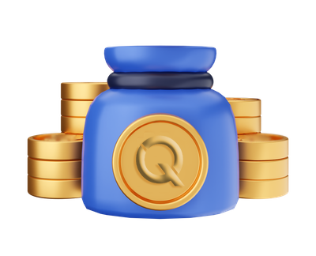

CoinsQ Coin Staking
Introducing CoinsQ blockchain coin staking, also known as token
staking, can bring several benefits for both cryptocurrency projects
and token holders. Here are some of the key benefits:
Network Security: Coin staking enhances the security and
integrity of a blockchain network. By staking their coins, token
holders contribute to the network's consensus mechanism, such
as proof-of-stake (PoS), and help validate transactions and
secure the network. Stakers are incentivized to act honestly and
maintain a vested interest in the network's well-being, as they
stand to lose their staked coins in case of malicious behavior.
Passive Income: Staking allows token holders to earn passive
income in the form of additional tokens. By staking their coins
and participating in network consensus, stakers receive rewards
or interest for their contribution. These rewards are typically
distributed proportionally to the amount of coins staked,
incentivizing token holders to hold and support the network for
the long term.
Token Value Appreciation: Coin staking can contribute to the
appreciation of a token's value. When token holders stake their
coins, they lock them up for a specific period, reducing the
circulating supply. This reduction in supply, coupled with
increasing demand, can create scarcity and potentially drive up
the token's market value. Token staking can thus be a strategy for
investors to benefit from both staking rewards and potential price
appreciation.
Network Governance: Many blockchain networks allow stakers to
participate in network governance and decision-making
processes. By staking their coins, token holders gain voting rights
to propose or vote on protocol upgrades, parameter changes, or community initiatives. This provides token holders
with a voice in shaping the network's future, creating a more
decentralized and inclusive governance model.
Long-Term Token Holder Engagement: Coin staking encourages
long-term token holding and reduces short-term speculation.
When token holders stake their coins, they commit to keeping
them locked up for a specific period, aligning their incentives with
the project's long-term success. This engagement and
commitment from stakers can contribute to a more stable and
dedicated community, fostering a strong foundation for the
project's growth and sustainability.
Price Stability: Staking can help stabilize the price of a token.
When token holders stake their coins, they remove them from
immediate circulation, reducing the supply available for trading.
This decreased supply can potentially counteract sudden price
fluctuations, promoting price stability and creating a more
predictable market environment.
Community Building: Coin staking can foster a strong and
engaged community around a cryptocurrency project. Stakers
become actively involved in the network, participating in
consensus, governance, and discussions related to the project’s
development. This active involvement can lead to a loyal and
supportive community that contributes to the project's success
through collaboration, feedback, and advocacy.
Environmental Efficiency: Compared to proof-of-work (PoW)
consensus mechanisms used in some blockchain networks,
staking is generally more energy-efficient. PoW systems require
substantial computational power and electricity consumption for
mining, whereas PoS-based staking consumes significantly less
energy. Staking rewards can be earned without the need for
resource-intensive mining hardware, making it a more
environmentally friendly approach.